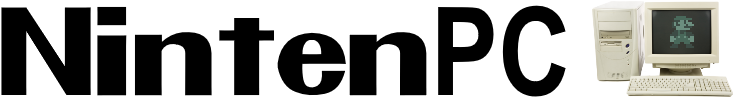

Welcome to the NintenPC project! Our goal
is to get most Nintendo games ported to the PC,
even including the NES. Though, to respect the law,
these downloads only contain the EXE/code for the game.
In terms of the data, you will need to get it on your own.